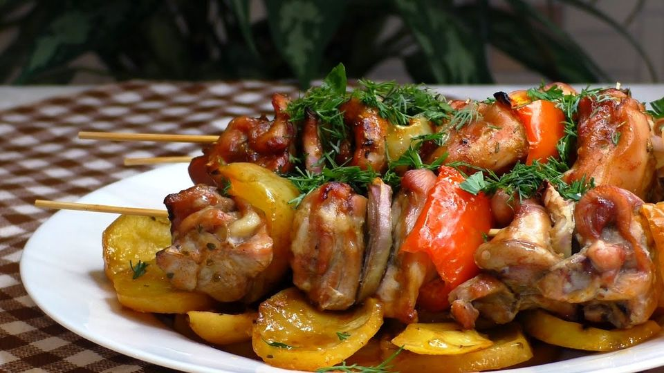

Klasické ražniči z vepřového masa, slaniny, klobásy a zeleniny. Skvělá volba na víkendový oběd.
Maso očistíme, nakrájíme na plátky a lehce naklepeme. Poté osolíme, opepříme a můžeme potřít hořčicí. Nakrájíme na kousky vhodné k napichování.
Slaninu, klobásu a papriku nakrájíme na podobně velké kousky jako maso. Cibuli rozkrojíme na čtvrtiny a rozebereme na vrstvy.
Střídavě napichujeme maso, slaninu, klobásu, cibuli a papriku na jehly nebo špejle. Vkládáme do pekáčku vymazaného sádlem nebo olejem.
Předehřejeme troubu na 200 °C. Ražniči podlijeme trochou vody, přiklopíme a vložíme do trouby. Teplotu stáhneme na 180 °C a pečeme doměkka asi 60 minut.
Na závěr odkryjeme a dopečeme dozlatova. V průběhu dopékání přeléváme výpekem.
Podáváme s vařenými nebo pečenými bramborami a zeleninou. Na talíři dozdobíme hořčicí a cibulkou.